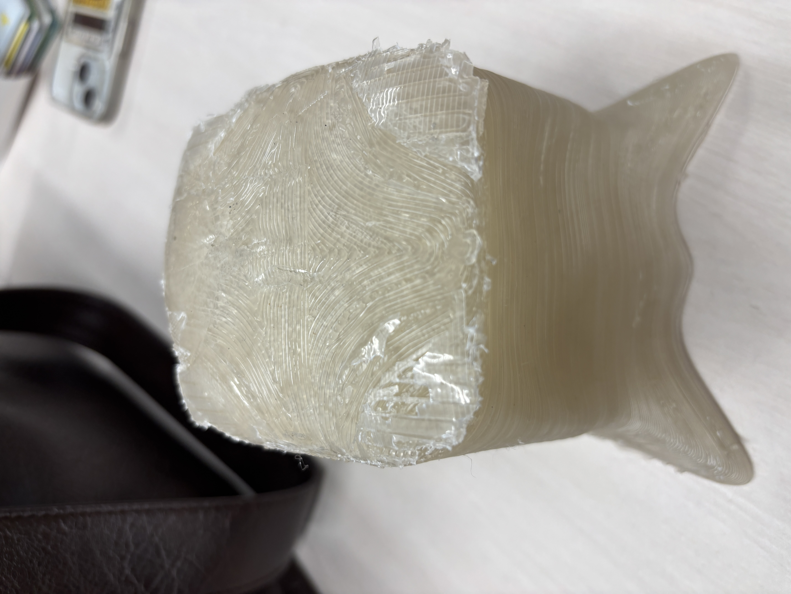
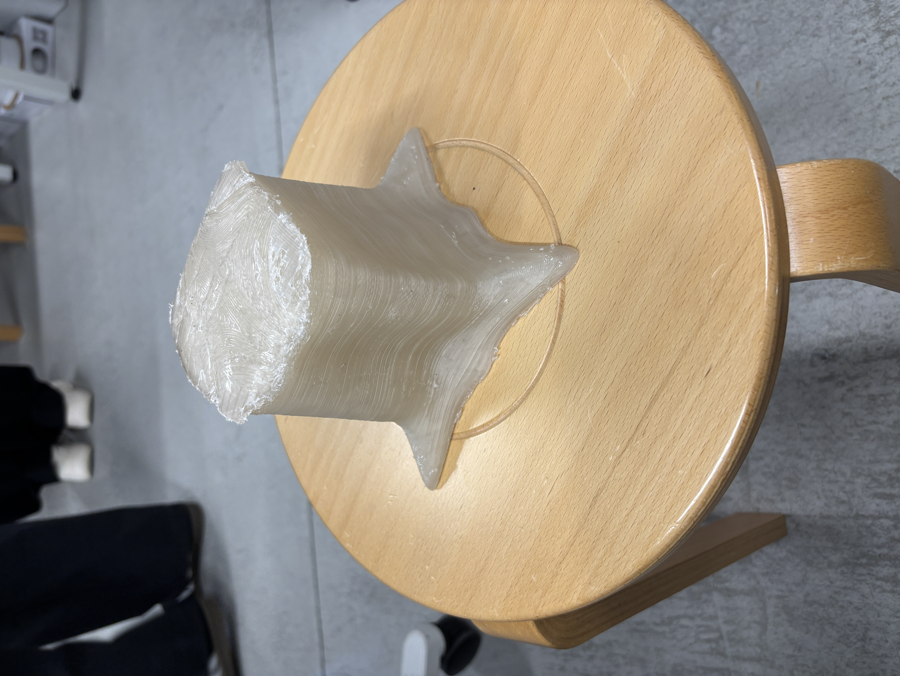
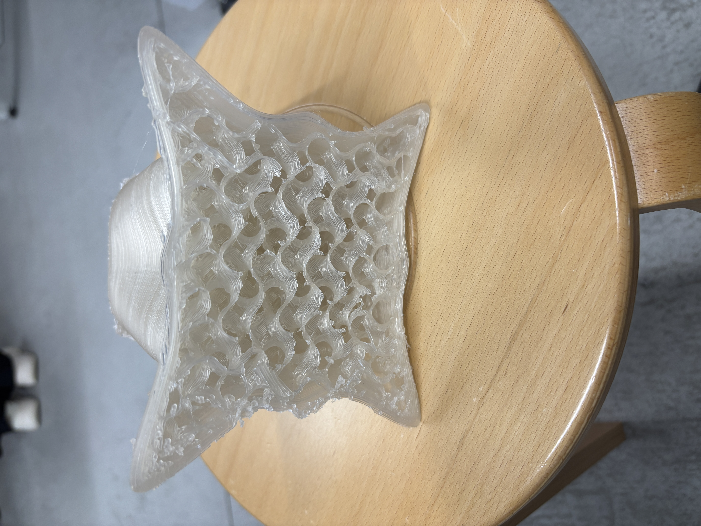
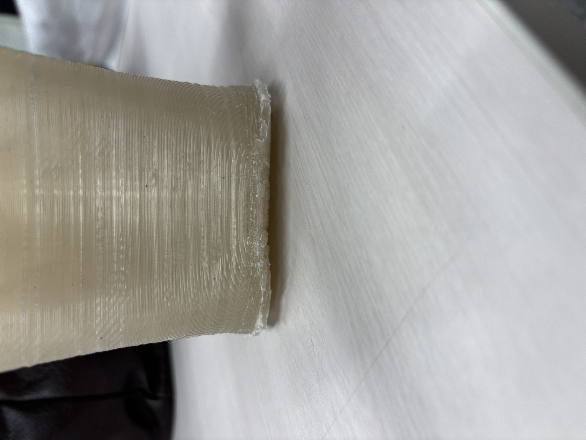

fusionのフォーム昨日を使い、切り株の造形に挑戦している。
うまくいったこととしては、一辺が15㎝立方体のサイズまで印刷できたこと。
また、サポートが取りやすい造形ができたこと。
うまくいかなかったこととしては、下の部分が反ってしまったこと。
反らないようにするために、あらかじめ反った状態の造形を作ってもいいかもしれない。
さらに、プレートの透明なテープをいかに空気を入れずに貼れるかが重要である。



